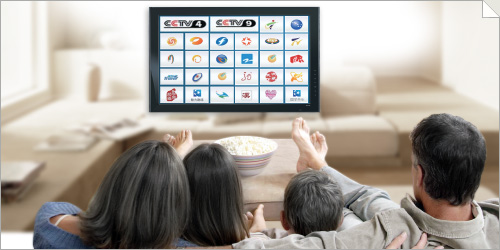

產品雜優惠多，如何挑選高質量的中文電視？
（弗吉尼亞維也納1月10日）
臨近春節，舉家歡樂之際正是北美中文電視服務銷售的旺季。產品供貨商們紛紛使出渾身解數，大打宣傳促銷牌，這邊"每月勁減數元"，那廂"贈送數個月免費"。但經筆者仔細研究發現，雖然選擇範圍很廣，但產品質量良莠不齊，所謂優惠也真真假假。在特提供中文電視導購比較，說明消費者選到自己滿意的產品，渡過一個快樂祥和的新春佳節。
一、看清優惠，算清價格
幾乎所有的中文電視提供商都在廣告中提到了"免費"二字，但大部分所謂"免費"水分都很大。有些指的是只有短短數日的免費試用期，有些免費則是需要您預先支付兩年的服務費才能獲得一定的折扣，並不是真的免費。而且大多數提供商還都收取高額的設備費，開通費等各種稅雜費，通通加起來，價格遠不像廣告中提到的那麼誘人。
以下為市面上主要中文電視產品的詳細比較表：
| iTalkTV | 其他公司 | |
| 標準計劃價格 | $9.99/月 | $29.99/月 |
| 頻道數 | 50+ | 50+ |
| 節目點播 | 免費 | 額外收費 |
| 影視點播：$10/月 | ||
| 兒童天地：$10/月 | ||
| 當前優惠 | 6個月免費 | 前三個月$9.99/月 |
| （無需預付費） | （需預付1-2年服務費） | |
| 設備押金 | 無 | 購買設備：$99 |
| 租借設備押金：$50 | ||
| 開通費 | 無 | 租借設備無 |
| 購買設備$25 | ||
| 郵寄費 | $9.99 | $15.00 |
| 首次付款 | $9.99 | $133.99-$340 |
| 一年花費 | $69.93 | $340-$663.88 |
以上信息由第三方採集於2012年1月，僅供參考。最新信息請登陸各大公司網站查詢。
要送，iTalkBB決定實實在在地送。高清中文電視3-6個月免費，無開通費，無設備費，無點播費，每月僅需$9.99，不需預付。30天試用退款，全無風險。一年的花費比市面上最便宜的同類產品便宜60%！
二、選清頻道，弄清畫質
作為收費的中文電視服務，內容必須豐富，畫質必須清晰，否則還不如自己去網上找。以下三點是您選購中文電視時必須考慮的。
1. 電視頻道是否是真直播
不少中文電視的電視頻道說是直播，實則是供貨商自己選擇錄製上傳的，會有數小時乃至半天的時差。想要在第一時間看晚會或是體育節目的消費者必須注意。
iTalkBB的電視頻道都為實時直播，並提供48小時回看功能，精彩節目，一個都不會拉下。
2. 畫質是否真高清
一些非正規的中文電視供貨商喜歡標榜自己擁有的頻道多，以及上電影電視劇的速度快，但是許多播放內容並無正規版權，清晰度很差，觀看體驗糟糕。也有一些商家聲稱自己的產品為高清，但其實只有少數幾個頻道達到真正的高清標準。
iTalkBB此款高清中文電視，特別推出中影院線板塊，所有上映電影皆為正版，達到藍光標準，喜歡看電影的朋友們絕對不能錯過。且所有主要電視頻道頁都是貨真價實的高清頻道，帶給您計算機和其他產品無法帶來的高端視聽體驗。
3. 點播是否收費，是否有限制
此外，與大多產品會收取點播費用，以及有點播限制不同，iTalkBB提供海量電視劇、電影、兩岸三地綜藝節目無限量免費點播，想看什麼看什麼，隨心所欲，無需再多付其他費用。
三、搞清供貨商狀況，勿上當受騙
北美中文電視市場競爭激烈，每天都有新人來舊人去，所以在購買所有需要預付服務費的產品請更提高警惕，建議事先了解商家的信譽和品牌，否則一旦該公司退出市場，消費者會遭受或多或少的經濟損失。
iTalkBB全面啟動歲末省錢風暴，優惠多多。詳情請撥打24小時服務熱線1877-482-5522或登入www.iTalkBB.com查詢詳情。
關於iTalkBB：
iTalkBB新電信是享譽全美的優秀通訊品牌，是國際電訊行業的領導和先驅。其以頂級全球網絡和前沿技術為依託，以最具競爭力的價格為客戶提供高質、清晰的本地、國內及國際長途電話服務，以及高清中文電視直播、回播與點播服務。其電話業務能完全取代傳統家庭電話，並享受多重免費提供的附加功能如來電等待、三方通話、來電顯示、呼叫轉移等。另有獨一無二的功能——中國大陸、台灣、香港、南韓當地號碼，當地親友只要撥打此號碼，就能接通到在美國的親友，而無需支付國際長途費用。iTalkBB的高清中文電視服務，自問世以來便受到了廣泛的好評和歡迎。超過五十個熱門頻道支持實時直播與48小時回看，海量最新電影電視劇綜藝節目免費無限點播，讓用戶以最低價格盡享華語娛樂。iTalkBB新電信將不斷努力，與您共同成就更美好的生活。iTalkBB設有24小時中英文的客戶服務熱線: 1-877-482-5522和官方網站www.iTalkBB.com，一年365天提供不間斷的服務與更多信息的查詢。